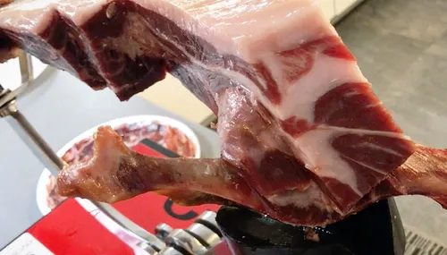
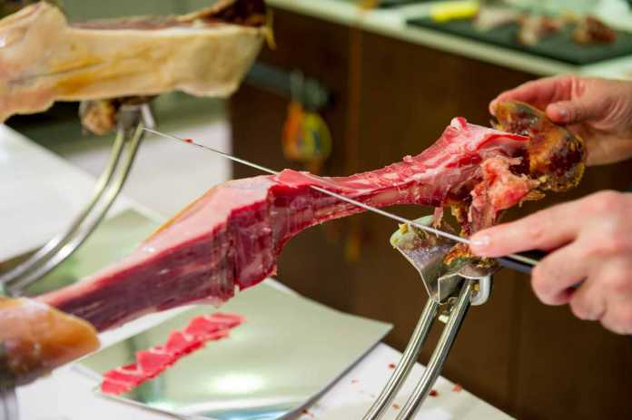
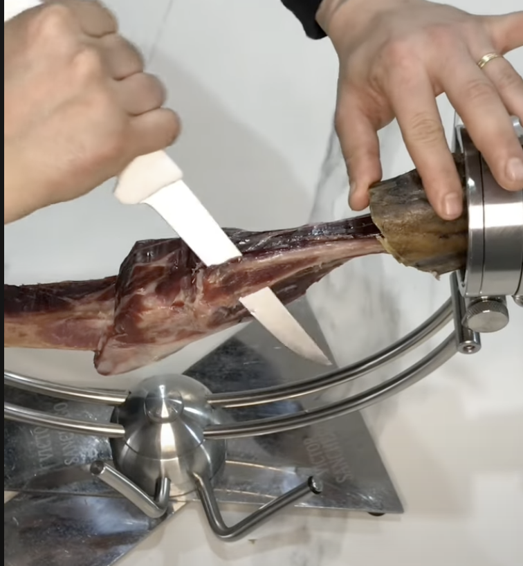
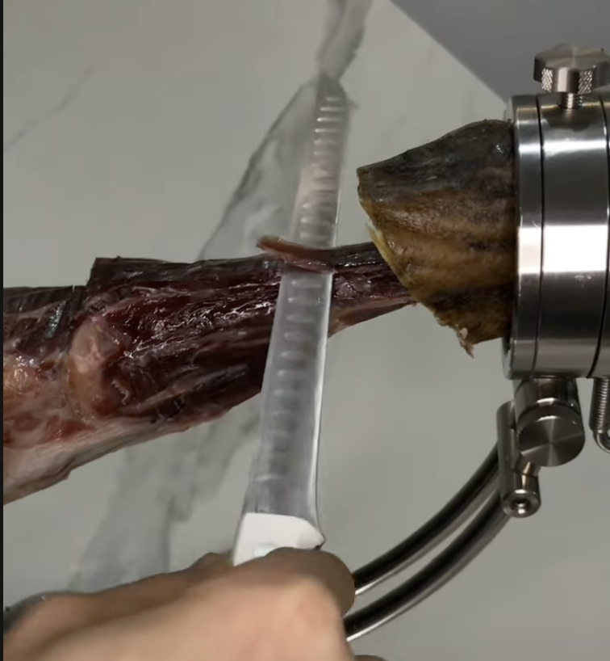
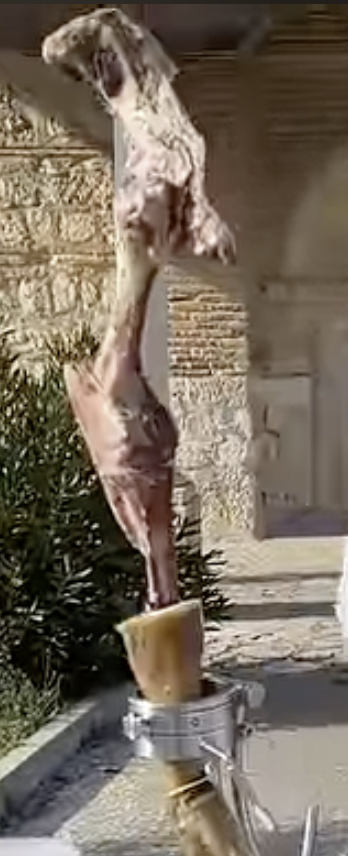

Para iniciar este tercer corte, colocaremos el jamón de manera tumbada sobre su parte mas carnosa y empezaremos a extraer las lonchas desde la punta para ir subiendo en el jamón según vayamos despoblándolo de carne.

Una vez llegado en este corte a la cabeza del fémur junto al hueso coxal, cortaremos las lonchas de manera horizontal al femur hasta volver a llegar a él y descubirilo.

Por último, llegaremos a la zona del jarrete para cortar esas lochas, donde nos encontraremos el hueso del peroné que habrá que hacer una incisión con un cuchillo para separarlo completamente.

Una vez retirado el peroné, tendremos libre el resto de carne del jarrete para terminar sacando las últimas lonchas que serán las más fibrosas.

Y así terminaremos de cortar nuestro jamón completamente.
